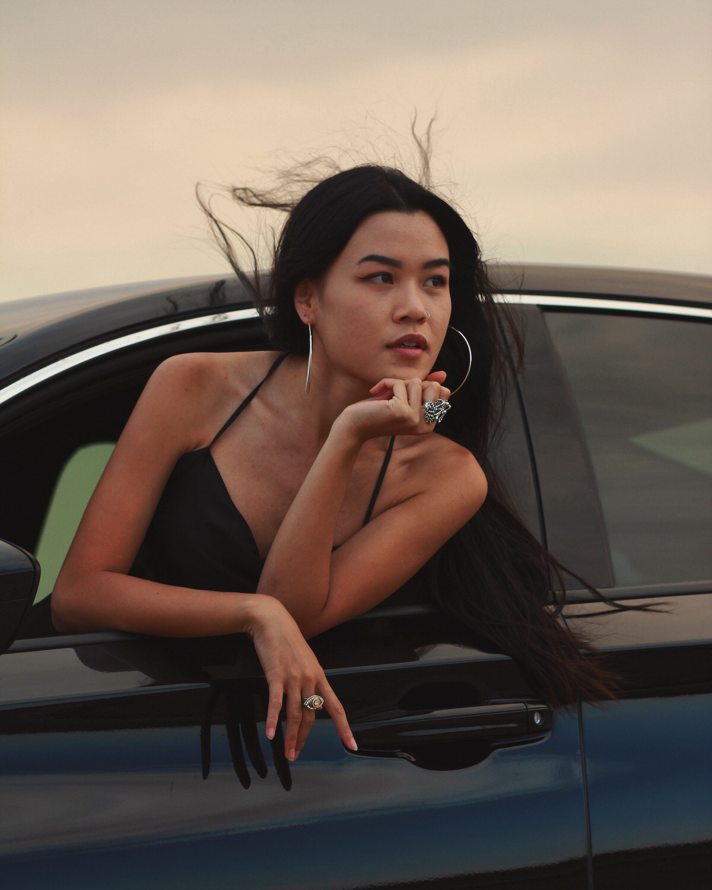
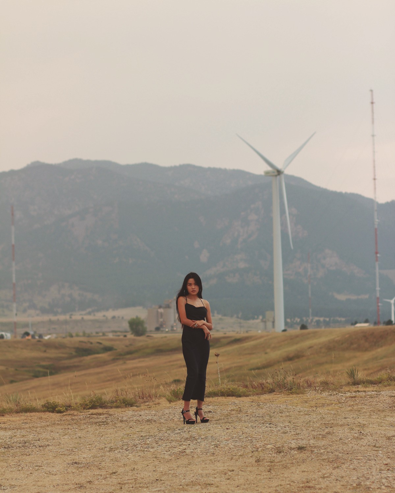

Cindy Vo
cindy.vo@colorado.edu
Graphic Designer
Frontier Airlines — December 2018 to Present
Maintain quality of branding on internal and external corporate collateral for all departments.
Create media communication assets and graphics for general social ads.
Design email creative with corresponding sales and promotions.
Design motion graphics for paid media gifs/videos for airport and city partnerships within the Frontier Airlines network.
Produce co-branding ads for corporate partnerships (Barclays, Visit Last Vegas).
Conceptualize and propose visuals for airport print/digital collateral and inflight collateral for airplanes.
Assist in on-site events with customer-facing communication including signage, posters, banners, and social media assets (route announcements, new tail announcements, milestone flights, schedule extensions).
Create swag and event materials for market visits.
Collaborate on the visual conceptualization of ad campaigns and lasting marketing promotions.
Remain flexible with multiple projects and deadlines from different departments.
Designer
Juniper Books — April 2017 to November 2018
Conceptualize, design, and propose projects for commercial and private clients.
Conceive new product ideas and packaging for mass production.
Develop templates for wholesale and retail decks/proposals for marketing.
Collaborate on large scale art installations and custom libraries for commercial events.
Maintain quality of private libraries and designs.
Design, manage, and send Mailchimp campaigns.
Re-design usability and overall aesthetic for juniperbooks.com.
Manage client projects within the design department.
Freelance Graphic Designer
January 2016 to April 2017
Create original vectors, posters, and signage for events.
Assist in event scheduling.
Maintain galleries.
Photographer for press releases.
Press release editor.
Research, test, and analyze user interfaces.
Set designing and videography.
University of Colorado, Boulder
Bachelor of the Arts
Minor in TAMS (Technology, Art, and Media) and Art History
Denver Chalk Art Festival
2017
The Pancake and Booze Art Show
2017
Eve Drewelowe Scholarship for Fine Arts
2016
Sketchbook Exhibition at University of Colorado
2016
ATLAS Expo for Creative Technology
2016
Eve Drewelowe Scholarship for Fine Arts
2015
Denver Chalk Art Festival
2015
Denver Chalk Art Festival
2014
Blake Street Art Exhibition
2014
Jefferson County High School Art Exhibition
2012
Jefferson County High School Art Exhibition
2011
Drawing
Illustrating
Graphic Design
Marketing Design
Motion Graphics
UI/UX Design
Web Design
HTML
CSS
Photography
Printing
Adobe Photoshop
Adobe Illustrator
Adobe InDesign
Adobe After Effects
Presentation design
Typography
Project Management
Time Management
Communication
Organized
Digital Ads
Directing
Event Management
Dog petting